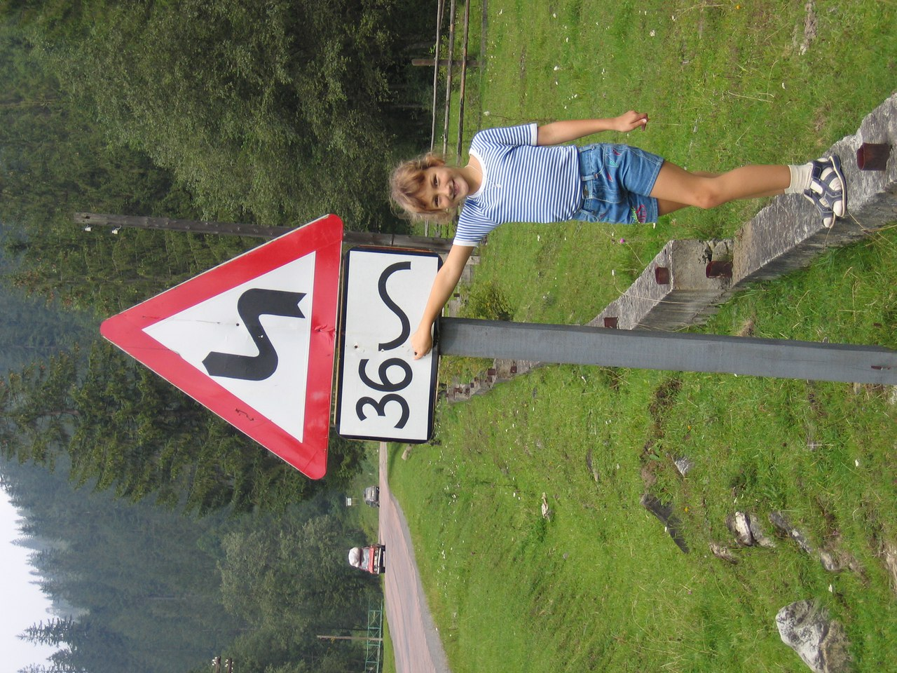
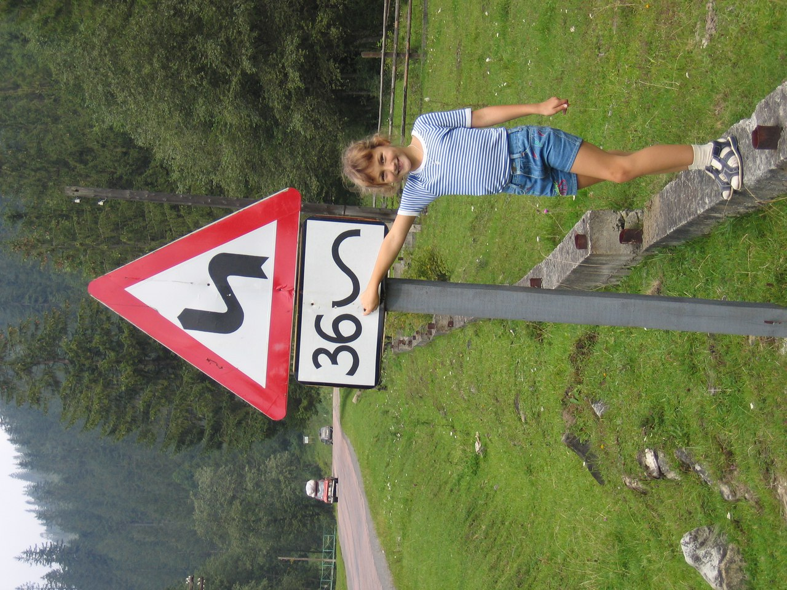

Не йди туди, куди веде дорога. Йди туди, де дороги немає, і залиш свій слід...
Ральф Уолдо Емерсон
Подорож - містична вистава життя. Трагедія чи комедія - залежить вже від нас, але обов'язково - з ноткою пригод!
Кажуть, що з мандрів повертаєшся вже не таким, яким відправлявся в них. В дорозі твориться магія, і її не під силу виловити навіть професійним детективам.
І не важливо чи це подорож на інший континент, в іншу країну чи просто в сусіднє місто. В дорогу пускаються тоді, коли хочуть відчути щось нове всередині, пізнати нові куточки планети і власної душі.
Завдяки батькам я подорожую з самого малку. Починаючи з рідних та неповторних Карпат і завершуючи іншими країнами, в яких живуть інші люди з абсолютно автентичною культурою та світоглядом.
Це направду вражає! Адже навіть світогляд у народів відрізняється. І ще більше заворожує це тоді, коли приходить розуміння цього факту.
Я вже навіть не підрахую скільки разів була в горах і в скількох - також, та найбільше мене причаровують Карпати. Є в них щось містичне, причаровуюче і рідне-рідне! І навіть попри те, що я там була безліч разів, до багатьох куточків Карпат я ще так і не добралася. Але це все є в планах) І також в планах є покататися по горах на велосипеді, адже цих захоплень я ще не поєднувала! Більше про двоколісного є на цій сторінці.
Тож якщо хочете - приєднуйтеся, буду рада компанії!
По Європі я теж вже покаталася немало. В переважній більшості - з батьками, та багато країн відвідала і з танцювальними колективами, в яких є змалку, і про які розповідаю на сторінці танці.
Фото з мандрівок по Україні, Європі та Карпатах Ви можете переглянути трішки вище.
А карту місць, де я вже була - трішки нижче)
Ще одна річ, яка кожного разу манить в гори - це трави. Напевне, передалось по генах від батьків, та я жити не можу без трав, грибів та ягід. З мене вже навіть жартували, що всі люди як люди, а Яринка не може повернутися з Карпат з порожніми руками) Та більше про це і не тільки на сторінці чай.
Річ, яку я можу сказати напевне - це те, що "краще гір можуть бути лиш гори, на яких ти ще не бував". І хоч це не моя фраза, та я з нею цілком і повністю погоджуюся!
Подорожуйте, насолоджуйтеся, відкривайте нове для себе і в собі, і Ви побачите як світ навколо набуває нових барв і горизонти розширюються!
І, звісно, кличте мене з собою! ;)
Тут Ви знайдете перелік країн, міст та містечок, які я відвідала)
- Turkey
- Анкара
- Анталія
- Стамбул
- Самсун
- Кемер
- Міра
- Кападокія
- Аланія
- Сіде
- Белек
- Памукалле
- та інші
- Greece
- Родос
- Italy
- Мілан
- Бергамо
- Верона
- Венеція
- Калабрія
- Серіате
- озеро Комо
- Belarus
- Мінськ
- Bulgaria
- Софія
- Несебр
- Сан-Андре
- Бургас
- та інші
- France
- Париж
- Стразбург
- та інші
- Germany
- Фрайбург
- Гамбург
- Дрезден
- та інші
- Austria
- Зальцбург
- Відень
- та інші
- Croatia
- Брелла
- Montenegro
- Будва
- Hungary
- Будапешт
- Сан-Антоніо
- та інші
- Poland
- Краків
- Перемишль
- Саліна
- Жешув
- та інші
- Czech Republic
- Брно
- Прага
- Карлові Вари
- та інші
- Швейцарія
- Кіасо
- Комо
- Netherlands
- Амстердам
- Заансе
- Утрехт
- Кокенкоф
- Нордвейк